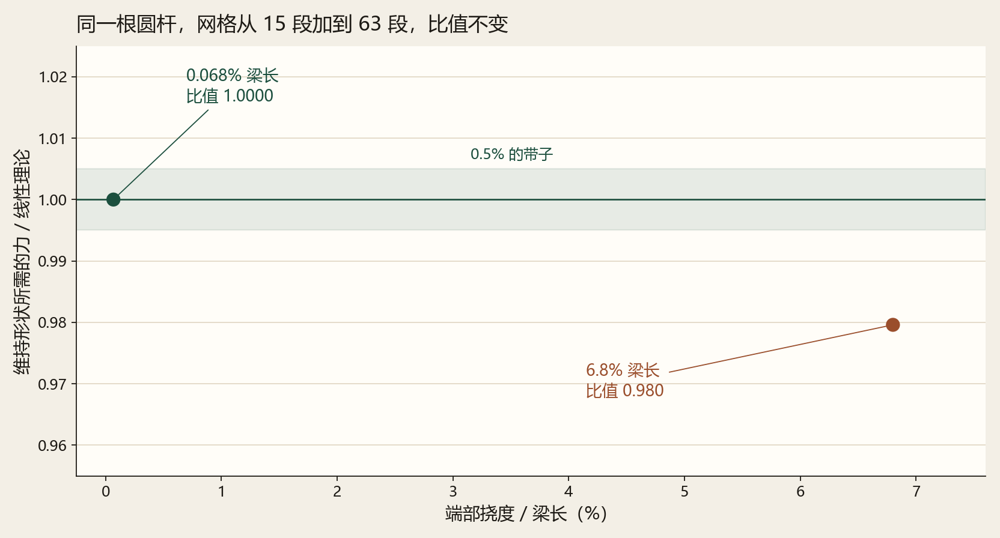

MuJoCo 4 · 2026.11.12
小挠度时，MuJoCo 4 的弹性杆和课本上的悬臂梁重合


2026 年 11 月，Google DeepMind 发布 MuJoCo 4.0。公告里有一句可以用尺子去量的话：新的一维弹性杆，在悬臂梁挠度上和欧拉-伯努利公式的差别在 0.5% 以内。我在装着八张 Radeon Pro W7900 的那台机器上装了 4.0.1，把这句话问了一遍。引擎在 CPU 上算。卡在机箱里，这道题没有叫它们。
上面第一张图是这句问话的答案。横轴是尖端低下去多少，纵轴是“要维持这个形状，端部得用多大力”，再除以线性理论给出的那个力。小挠度落在 1.0000 上。挠到梁长的 6.8%，比值落到 0.980，而且把杆切得更细也不会把它拉回去。
问的是一根被夹住的圆杆
MuJoCo 4 用一维 flex 换掉了以前的 cable 插件。圆截面的惯性矩按课本写，I 等于 πr 的四次方除以 4。弯曲能量记在相邻两段边上，刚度是弹性模量乘惯性矩，再除以两段长度之和。根部要真正夹住，得把前两个顶点钉在世界上，第一段边的方向才转不了。只钉一个点的话，杆会绕着那个点甩出去，梁理论还没开始。
线性理论说，端部加一个力 P，尖端挠度是 P 乘 L 的三次方，再除以 3EI。我没有等动力学自己荡到平衡。这根一米长、总质量一公斤的杆，阻尼很轻时周期要一分多钟，再往后位置还会慢慢漂。静力学更干净：把杆直接摆成公式画出的那条曲线，调用 mj_inverse，读维持这个形状所需要的端部力，拿它和 P 比。
半径 5 毫米，弹性模量 1 兆帕，夹住之后剩下的弹性段长 1 米。分段从 15 段加到 31 段、再加到 63 段，比值不动。差不在网格上。
小挠度重合，大挠度是公式先走
端部挠度只有梁长的 0.068% 时，反力是 9.999979×10⁻⁷ 牛，放进去的理论载荷是 10⁻⁶ 牛。比值 1.0000，相对差大约百万分之二。17 个顶点、33 个顶点、65 个顶点，是同一个数。公告里那条 0.5% 的带子画在图上，这个点离带子的中线比离带子的边更近得多。
挠度放到梁长的 6.8%，比值落到 0.9796。再加密，仍然是 0.980 这一档。线性公式自己的前提是挠度远小于梁长，斜率和 1 相比可以丢掉。6.8% 已经开始还这笔账。杆的刚度没有跟着分段数变。
所以这句话可以收窄之后再说：在线性理论成立的那一端，MuJoCo 4 的圆杆和课本是同一句话，而且比公告写的 0.5% 紧得多。挠大了，先离开的是那条线性公式。
塑性停在该停的角度
4.0 同时给铰链加了理想弹塑性。刚度 20 的一只铰，先掰到 1 弧度，再把力矩拿走。不设屈服，它回到 0。屈服设成 0.3 弧度，松开后停在 0.6975 弧度，写在塑性状态里的参考角也是 0.6975。弹性那一段把屈服量退回去，剩下的应当是 0.700 弧度。差 0.36%。弯过了的那一下留在铰上，没有偷偷弹直。
4.0.1，以及这次没有打开的门
装上去的是 11 月 11 日的 4.0.1，不是五天前的 4.0.0。4.0.0 的稀疏 Cholesky 在约束雅可比很稀的时候，会把牛顿法用的海森因子排错，轻则收敛变慢，重则发散。4.0.1 修的是这件事。发布说明在 4.0.1，弹性杆那句 0.5% 写在 MuJoCo 4 的公告 里。
Python 包拆成了三份。mujoco 会带上 mujoco-core 和 mujoco-studio。core 只依赖 numpy。studio 里是 Filament 和浏览器那条观看路径。这次核对没有打开 Studio，也没有跑布料的无穿透接触。MuJoCo Warp 是和 NVIDIA 一起做的 GPU 后端，没有编进这次。无界面的机器上，能问清的是这根杆和这只铰。
小挠度时，杆和课本重合。挠大了，先不重合的是线性公式自己。